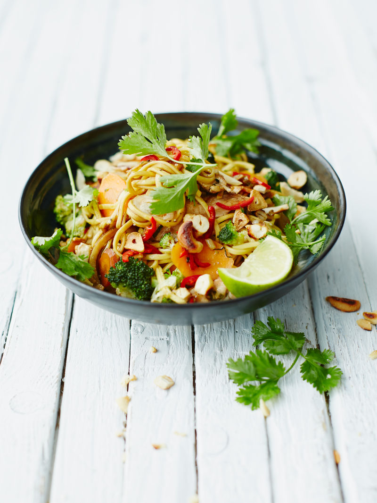

Fried Chicken Noodle Recipe

Ingredients
- ½ a bunch of fresh coriander
- 3 cloves of garlic
- 5 cm piece of ginger
- 1 bunch of spring onions
- 1 fresh red chilli
- 1 lime
- 2 carrots
- 1 head of broccoli
- 2 skinless higher-welfare chicken breasts
- 250 g medium free-range egg noodles
- 50 g unsalted cashew nuts
- vegetable oil
- freshly ground black pepper
- 1-2 tablespoons low-salt soy sauce
- 1 tablespoon fish sauce
Preparation Time
40 min
Instructions
- Pick the coriander leaves and finely slice the stalks, then keep aside for later. Peel and finely slice the garlic, then peel and matchstick the ginger.
- Trim and finely slice the spring onions, deseed and finely slice the chilli and cut the lime into wedges.
- Trim, peel and thinly slice the carrots at an angle.
- Cut the broccoli into small florets, then finely shred the stalk, discarding any gnarly bits. Cut the chicken into 1cm strips.
- Cook the noodles according to packet instructions, then drain and refresh under cold water. Drain again, toss in a little oil and put to one side. Lightly toast the cashew nuts in a non-stick frying pan until golden, then tip onto a plate to cool.
- Heat 1 tablespoon of vegetable oil in a large frying pan or wok. Season the chicken with a pinch of pepper, then add to the pan and stir-fry for 2 to 3 minutes, or until golden. Add the coriander stalks, garlic and ginger and cook for a further minute.
- Add the spring onions, carrots and broccoli and stir-fry for a further 2 minutes, then add the cooked noodles. Keep stir-frying until the noodles are warm and the chicken is cooked through. Stir through the soy and fish sauces, then remove from the heat.
- Divide between bowls, sprinkle over the nuts, sliced chilli and the reserved coriander leaves, then serve with the lime wedges for squeezing over.
Back to Home